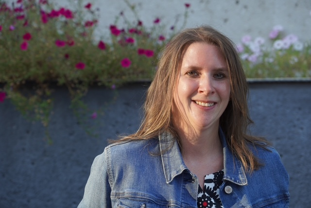

Carolyn Borucki

Summary
Dedicated professional with excellent verbal and written communication skills, and with a strong background cultivating positive relationships. Ready to take on challenges using problem-solving and task prioritization skills to help the whole team succeed.
Education
Bachelors of Science, Biology; Minors: Chemistry/Spanish
Middle Tennessee State University, 2005-2011
Work Experience
Business Intake Quality Assurance Specialist - Pillsbury Winthrop Shaw Pittman, Jul 2023-Present
- Review, perform Quality Assurance and finalize New Business memo forms
- Effectively utilize complex relational database applications
- Collaborate with attorneys, conflict analysts, and assistents to ensure that matters conform with internal risk-related rules
Compliance Specialist - DCI Donor Services, Aug 2022-Jul 2023
- Efficiently initiate, review, and maintain error reports including complaint files, adverse events, and other compliance reports
- Lead Material Review Board meetings to inspect and discuss returns of defective product
- Adhere to ISO, FDA, and other regulatory standards whilst performing other compliance duties
Drug Safety Specialist - ICON, Oct 2021-Feb 2022
- Monitor company inbox for case intake, and ensure that all emails are triaged appropriately
- Create 10+ drug trial cases per day utilizing the GSD platform, ensuring accuracy of pertinent details
- Verify according to company procedures for the accuracy and completeness of all source documents received
Clinical Laboratory Associate 3 - Vanderbilt Medical Center, Aug 2015-Oct 2021
- Oversee 500+ lab specimens per week to ensure accurate sorting and labeling
- Collaborate physicians and other personnel to deliver timely test results and provide answers
- Aliquot approximately 1,500 laboratory specimens per month to prepare for analysis
Skills
- Critical Thinking Skills
- Quality Assurance
- Interpersonal Relationships
Certifications
- Google Data Analytics Certificate
- Certificate in Risk Management
Other
Contact Me